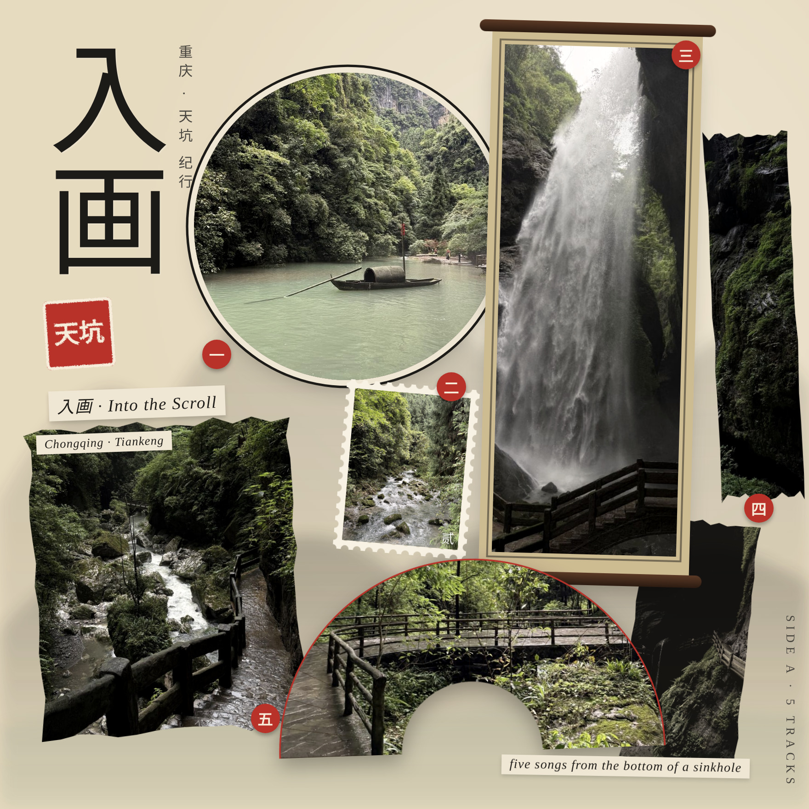

Zhangyan Li

Five songs from a trip to a tiankeng (giant sinkhole) in Chongqing.
Hou Xian 后弦
2006
Xu Song 许嵩
2010
Huo Zun 霍尊
2014
Zhang Xiyun 张曦匀
2022
Shan Xun 单循 (cover)
2017
On a trip to Chongqing I walked down into a tiankeng, a giant sinkhole full of cliffs, moss, mist and waterfalls. Every view looked like a Chinese ink painting. These five guofeng songs kept playing in my head the whole time, so they became the soundtrack of that day. The cover is a collage of my own photos from the trip.